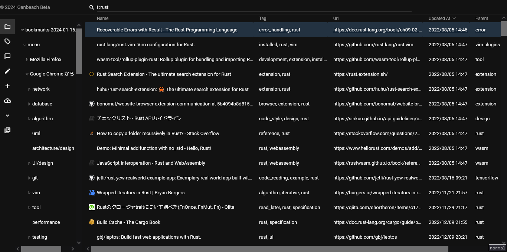
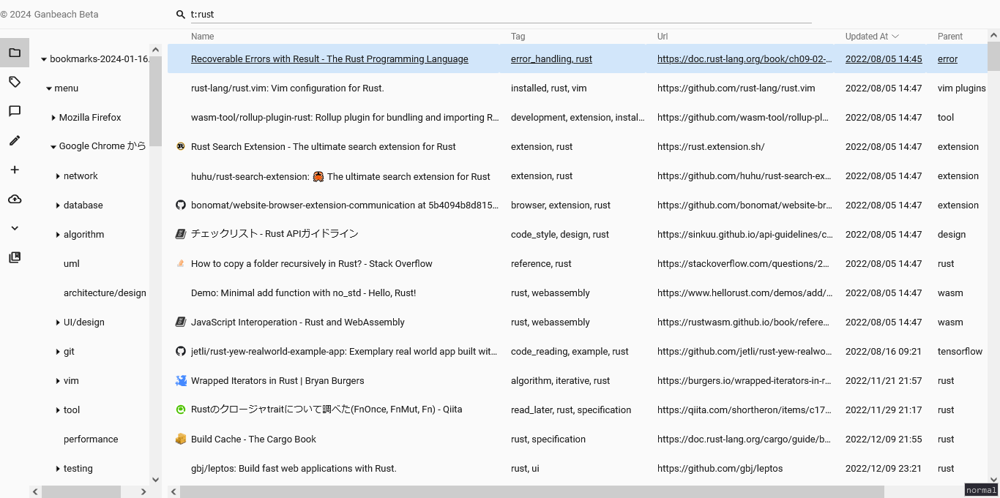
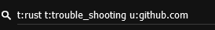
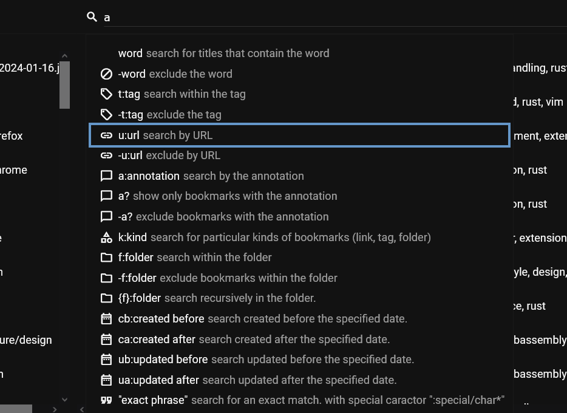
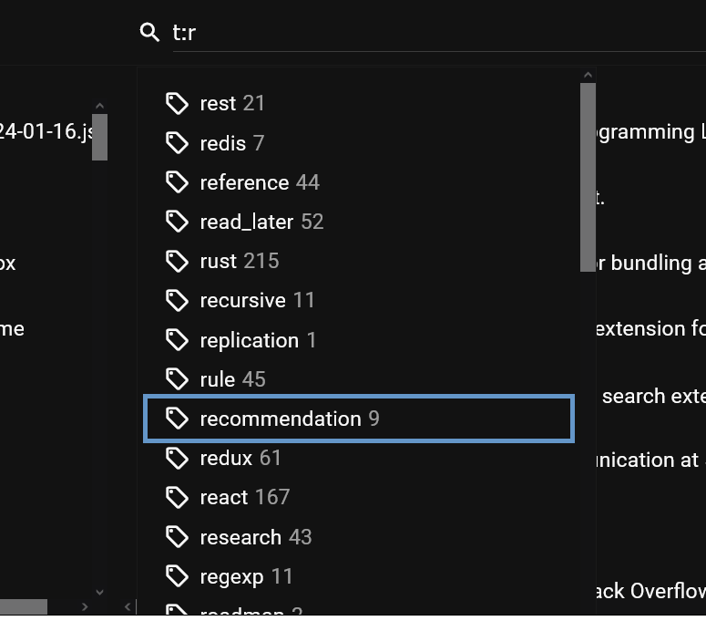
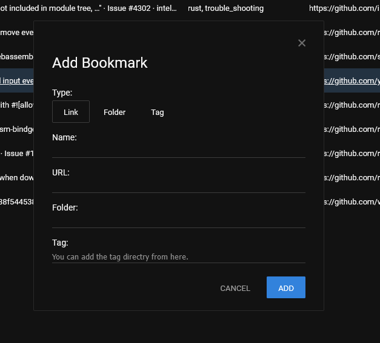
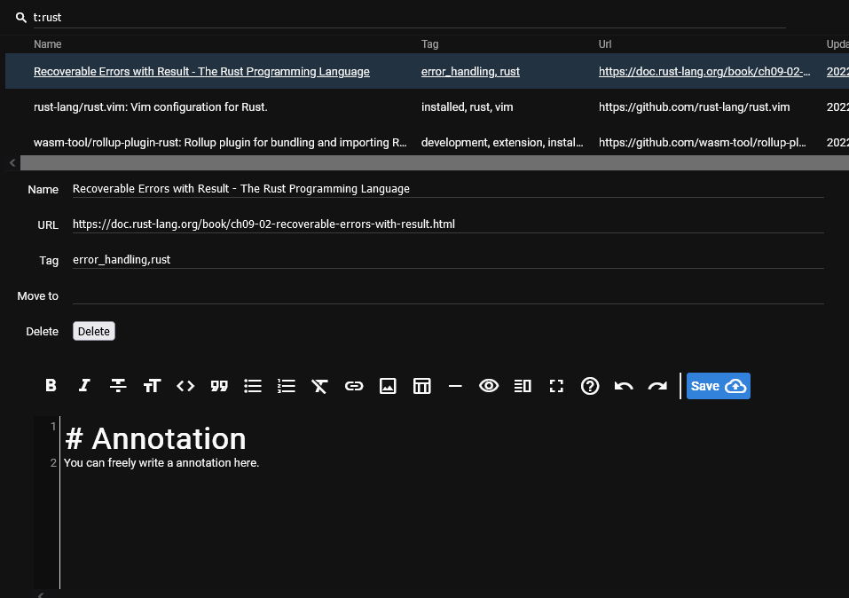
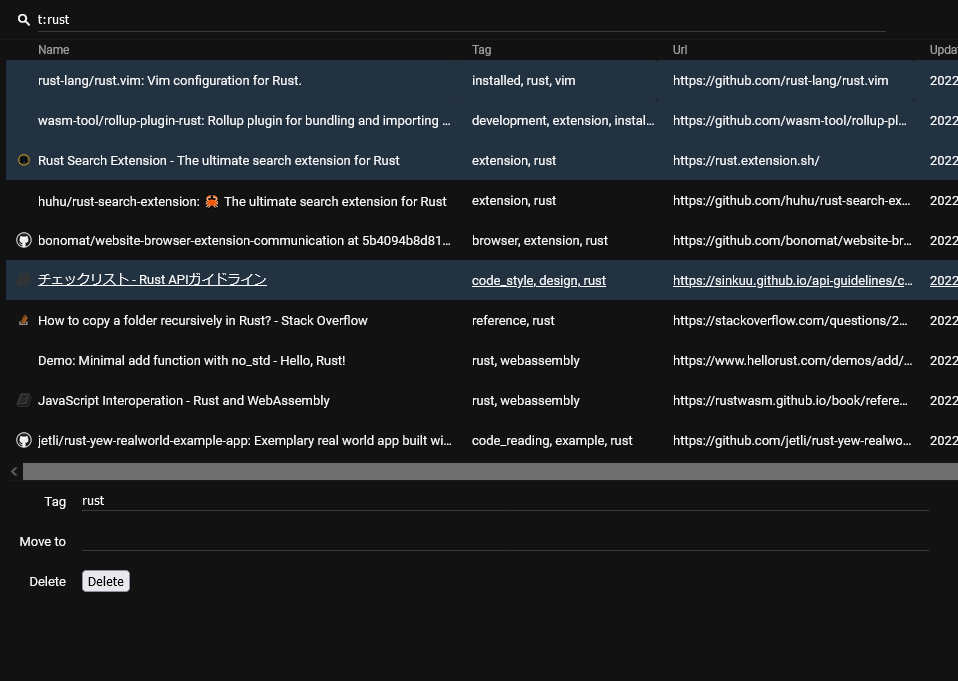
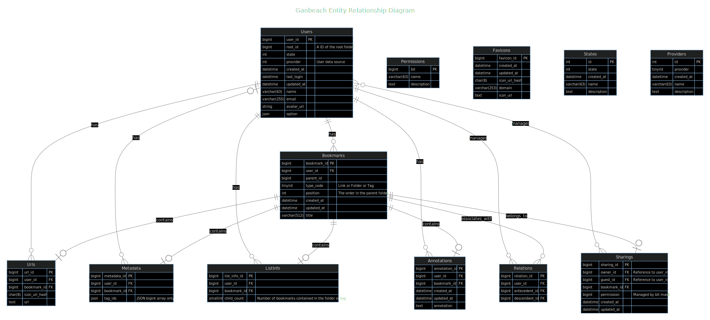

Introduction
制作したアプリケーションについて
制作したアプリケーションについて説明します。
- 概要とURL — アプリケーションの概要とURL
- スクリーンショット — 画面のスクリーンショット
- 開発モチベーション — 開発した動機と要件について
- 機能 — 主な機能やその他機能について
- インフラ構成図 — サービス全体のインフラ構成を表した図
- ER図 — データベースのテーブル同士の関係を表した図
- 開発言語 — 開発に使用した言語について
- 注力した点 — 開発で力を入れた点について
- 反省点 — 開発中や開発した後に気付いた反省について
- 改善点 — 今後の改良や機能追加の計画について
概要
- ブックマークをインポートして管理するWebサービスです。
- 多くを外部ライブラリに依存せずに自力で実装しました。
- React,Yew,gRPCフレームワークなどの基幹部分を除いて。
- 検索クエリの組み合わせによって柔軟な検索ができます。
- 補完入力で簡単に検索できます。
- マークダウンでメモを追加して表示＆検索ができます。
URL
ブックマーク管理
Webサイト: https://ganbeach.com
ブックマーク追加用拡張機能
ソースコード: https://github.com/oyamh/ganbeach-bookmarker
Chrome Web Store: https://chromewebstore.google.com/detail/ganbeach-bookmarker/jddhooblgpikkhhdhoebgjohoglmincf
Firefox Add-ons : https://addons.mozilla.org/firefox/addon/ganbeach-bookmarker/
スクリーンショット
Top画面
ダークテーマ

ライトテーマ

検索
検索クエリの例

検索フラグ一覧

検索クエリの補完入力

追加
ブックマーク追加パネル

編集
編集モード

複数行の一括編集

開発モチベーション
機械学習を学ぼうと考えたのですが、学んでどうしたいかの目標がありませんでした。 そこで、まずは自身の情報資産を機械学習に活用できる基盤アプリケーションを作りたいと考えました。 日々蓄積していたブックマークデータを利用したアプリケーションを作ることにしました。 ブックマークをより使いやすくするためのアプローチを考え、実装していきました。
要件
ブックマーク管理機能
- 基本的なブックマーク管理機能
- ブラウザのブックマークファイルやブックマークバックアップのインポート機能
高度な検索機能
- キーワード、複数タグ、時間範囲指定などで同時に絞り込み検索できる機能
補足情報の追加機能
- アノテーションとして自由なテキストを追加できる機能
- ブックマークした理由などのメモや、内容の要約などの追加機能
- アノテーションの検索機能
- マークダウン形式
手軽に扱えるUI
- タグやフォルダの補完入力機能
- キーボードでの操作
- ブラウザ拡張機能のVimiumやTridactylでの操作
機能
主な機能
- ログイン
- SNS認証
- GitHubアカウント
- Googleアカウント
- メールアドレス認証
- メールアドレスへ認証コード送信
- SNS認証
- ログアウト
- ブックマーク
- インポート
- 登録
- ブックマーク
- フォルダ
- タグ
- 検索
- 編集
- ブックマークデータ
- アノテーション
- 削除
- 一括削除
その他機能
- キー入力による行選択
- 編集モード
- アノテーション閲覧モード
- 行選択
- 複数の行を選択して編集
- 複数の行を選択して削除
- 検索バー
- 補完入力
- タグ
- フォルダ
- 時刻
- キーボードでもマウスでも選択可能
- 検索フラグ自体も補完入力可能
- 補完入力
- テーマ変更
- フォルダツリー
- タグ一覧
- ブックマークインポート
- リンクのFaviconをダウンロードしてサイズ変更したのち保存
- ブックマーク追加
- リンク、フォルダ、タグの三種類を追加可能
- フォルダやタグにもタグを付与可能
- 補完入力
- アカウント
- 消去
- 認証コードによる消去
- 消去
- テーマ変更
- Light
- Dark
- 行ソート
- 名前
- タグ
- URL
- 更新日時
- 作成日時
- カラム整理
- 順番入れ替え
- 消去
インフラ構成図

ER図
Mermaid Live Editor
クリックでMermaid Live Editorを開きます。
![Ganbeach ER Diagram Live Editor](https://mermaid.ink/img/pako:eNq1V9ty2jAQ_RWNnsoMZLiEQPyWTppO2iTN5PLS0vGsbQEqtsRIMglN-PeubGwMCNKkqZ9knd3V2Yt35ScayohRjzYajYEw3MTMI59BBAzCMflkd-bkhsVguBR6zKfklMNIQTIQmQZT5TvB514zpclT_mKfgI-4MCTFfZ9H5PrrFqSkNBYa0BNyfkrkkJgxy3bJUMYRUwO60rEK2oBh61tTJWccRdGIZUAiMEC0TFXIqtq4zQxPGAkVw2Xkg3GAMWjjxxLJOcB0Gm1pzkCFY1Afjjo1IiBh20i7260RlgCPV5g2iosRgRlyVX6qKtAvLQWRUxvyfHMxWC6CHx-lnCSgJvqnI8zBEtwR6iILZ9vQFBQTNg8rxHAxt5CZT5lvqwSje8HFhEhFzrLM2NUdjDYTNJWaW-4of4eplMqKcpHlNT_Hkdm_y82-8Hdb7RrJKngjaPcqdtakil8fp2qEq3DGoF8jPJTCJtMfgx5XYskeswM3mF0yA1mtbrNLltD7UcyqysAI9zWm5svtt6tCBZSCOZEinhcpKSlecG3OxVA6KMYI-Ryx9-OoE4hjKxCOeRxh1aW4HtCrNAlsuQ1LRU0w0Aa4YFFRWsOyJs2qJks_ToSQJu9iDlegRN_Pl7dXdFYtK0obnpTd2OGHWmKv9wKEYSGL8ibgEoiYDpmIYF2gZHWLHwD2MxcpnUM7OMkHUZDCTN-wIcMOETJiZEG32iaWSqOUafNapV2JKlogUwnXOm9clyBghLUVzBHGrxH05N-7VRms6_IoV7zsgdVA7Z4vWaHYxCjumhZnMLP9yHXGMIc2c_L2mn2hAa4mIToRSRyFYsONQnGzruy0X_PA0t-g7bgW7PXkzRG9Xl40XiJUzM7iYvK_eeX3rufnRkM-kYB4BKPvQLJJWAGDHHgugGVPXVeVmWo5qlzqFdBpIj-9HCUuExVwj4lqF3dZWcf3GFo1UQ8_bvutr5talwCtZchtIfoP3Iyr9hZ5eMr25zb3XBUIWCxx5Rs5ELROE2wGwCO8g2c1NaA4zDD11MNlhO3K9p0FykFq5O1chNQzKmV1mn-Fy-t3sTkF8V3K6iv1nugj9ZoHTXxazd5hp9fptdvN3tFh66hO59RrNZsH3X6ne9xt97r9Xv94Uae_MyOtOmURN1Jd5j8J2b_C4g_EjtK-?type=png)
SVG

開発言語
Go
APIサーバーの構築に使用しました。
- Userデータを処理するAPIサーバー
- Bookmarkデータを処理するAPIサーバー
- Import Fileを処理するAPIサーバー
選定した理由
- 静的型付け言語での経験
- シンプルな言語仕様
Typescript
クライアントサイドのUI構築に使用しました。
選定した理由
- Reactでの開発経験
- 型システムによるJavaScriptの開発効率化
Rust
ブラウザ拡張機能の制作に使用しました。
選定した理由
- メモリ効率
- 実行速度
- 軽量なバイナリファイル
- 上記三つは将来的なサーバーレス環境に最適
- 強い型束縛
- 効率的な開発に必要不可欠
- ゼロコスト抽象化
- Goではパフォーマンスの問題で躊躇していた抽象化が問題なく可能
注力した点
制作の中でも特に力を入れた点や苦労した点について説明します。
バックエンド開発(Go)
マイクロサービス
- ブラウザ上のフロントエンドと複数のAPIサーバーが、それぞれ必要に応じてデータ通信を行います。
- 認証情報はトークンとしてブラウザが保有し、HTTPヘッダーに付与して通信を行います。
クリーンアーキテクチャ
- 各レイヤーで依存を分離しつつ、依存関係を単一方向にしています。
データベース関連
- テーブル設計
- 外部キーを最大限に活用しています。
- テーブル結合によって効率的な検索を実現しました。
- 複合的な操作を実現するために、正規化の余地を残しています。
- フォルダもタグもブックマークとして同じテーブルに入れています。
- フォルダにタグを付けたり、タグ自体にもタグを付けることができます。
- フォルダもタグもブックマークとして同じテーブルに入れています。
- 外部キーを最大限に活用しています。
- ORM(Object Relational Mapping)を使わずに実装
- 事前にSQLを定義し、Stored Procedureとして使用しています。
- Placeholder機能を使うことで、セキュアなSQLを構築できます。
- 検索では、サーバー内でSQLを動的に構築して高度な検索を実現しています。
- 検索クエリに応じて、WHERE句とINNER JOIN句を動的に構築しています。
- Stored ProcedureとPlaceholderを使うことで、SQLをセキュアに保っています。
- フォルダ検索の場合には、WITH RECURSIVE句を使ってフォルダの再帰的な検索ができます。
- 事前にSQLを定義し、Stored Procedureとして使用しています。
キャッシュ
- 依存の分離
- 開発中はRedisのホスティングを想定していました。
- 本番環境では費用を抑えるため、Redisのホスティングを諦めてGoogle Cloud Firestoreに変えました。
- 依存を適切に分離していたので、変更に対して楽に対応できました。
メールアドレスのみによる認証
- メールアドレスによる認証では、独自に認証コードを発行してEメールで送信しています。
gRPC通信
- gRPCを使って通信を行います。
- 通信データには、Protocol Bufferスキーマで定義されたデータ型を使っています。
- Connectで出力した型安全なコードを使ってクライアントと通信を行います。
フロントエンド開発(TypeScript)
外部依存の回避
- ReactとCodeMirror(マークダウン対応のテキストエリア)のみを使って作成しました。
- URLルーティング機構を自作しました。
- シンプルなSPA(シングルページアプリケーション)を実現できました。
- 複雑なクエリによる検索を、URLによるアクセスに落とし込みました。
- 検索クエリ自体を、リンクとしてブックマークして再利用できます。
- ブラウザのHistory APIのBack & Forwardが使えます。
- 外部から隠蔽された状態を減らしてシンプルな仕様になったので、機能拡張がしやすくなりました。
- コンポーネントを自作しました。
- 設計を学ぶため、余計なライブラリを使わずに実装しました。
- 後のYew(Rust版React)による開発に経験を活かすことができました。
- 自由度の高いコンポーネントを作って、複数箇所で流用できました。
- 補完入力ポップアップを表示するコンポーネント
- 設計を学ぶため、余計なライブラリを使わずに実装しました。
- 可変レイアウトを自作しました。
- 各カラム、サイドバー、編集パネルのDrag ResizeをCSS Gridで実現しました。
- 軽快なエリアのリサイズができます。
- 各カラム、サイドバー、編集パネルのDrag ResizeをCSS Gridで実現しました。
gRPC通信
- gRPCを使って通信を行います。
- 通信データには、Protocol Bufferスキーマで定義されたデータ型を使っています。
- Connectで出力した型安全なコードを使ってサーバーと通信を行います。
拡張機能開発(Rust)
RustによるWebAssembly
- Rustで本格的なブラウザ拡張機能を作った例は、調べた中でほとんどありませんでした。
- 問題が起きたときは、RustやWebAssemblyやブラウザ自体のIssueなどを調べて、解決できそうなこと、今は解決できないことを取捨選択しながら制作しました。
React経験の応用
- Yew(Rust版React)を使って制作しました。
- Reactによるコンポーネント開発の経験を活かすことができました。
依存関係の扱い
- DI(依存注入)の役割を担うContextによって各モジュールを疎結合に保っています。
gRPC通信
- gRPCを使って通信を行います。
- 通信データには、Protocol Bufferスキーマで定義されたデータ型を使っています。
- Connectで出力した型安全なコードを使ってサーバーと通信を行います。
クラウド＆ネットワーク構築
Google Cloud Engine
- 内部ではMySQLのDockerイメージを入れたコンテナを運用しています。
- Cloud SQLは使いませんでした。
- 目につきやすく、情報も多かったのですが、費用が掛かるため却下しました。
- Cloud Engineを無料で運用しています。
Google Cloud Run
- APIサーバーのDockerイメージを入れたDockerコンテナを運用しています。
- scratchイメージにバイナリファイルのみを組み込んで、軽量かつセキュアなコンテナを運用しています。
Google Cloud Storage
- リンク先のサイズ変更済みFaviconを保存しています。
Cloud Firestore
- Black Listに登録されたTokenのIDなど、ユーザー制限についての情報を保管しています。
CloudFlare
- Pages
- Viteを使って軽量化したコードを展開しています。
- Worker
- メンテナンスページの表示に使用しています。
- IPアドレスを変数に登録することで、特定のアクセスのみを許可できます。
- メンテナンスページの表示に使用しています。
ネットワーク構築
- 複数のAPIサーバー、DBサーバー、キャッシュサービスのネットワークを構築しました。
- クライアント/サーバー間はgRPCで通信を行っています。
- APIサーバーはそれぞれ個別のドメインで管理しています。
セキュリティ
ログイン
- ログインにはSNS(GitHub, Google)のOAuth認証APIを使っています。
- ログインに使われるCookieはHttpOnly属性やSecure属性を使ってセキュアにしています。
- ログインにはJWT形式のStateトークンを使って、よりセキュアなログインを実現しています。
- 署名されたStateトークンに埋め込んだNonce値と、HttpOnlyなCookieのNonce値とを組み合わせたHash値を、キャッシュに保存してあるHash値と一致検証して、ログインの正当性を判定しています。
- メールアドレスによる認証では、独自に認証コードを発行して外部サービス経由のメールで送信しています。
JWT
- 各サーバーとの通信にはJWT形式のアクセストークンを使用しています。
- アクセストークンの期限は短く設定し、より安全に保管しているリフレッシュトークンを使って再取得させています。
Dockerコンテナ
- Docker Secretを使ってセキュアなImageを構築しています。
- Docker SecretはImageの構築コマンド履歴に環境変数やSecretが残ってしまうのを防ぐために使われます。
- 履歴を見られること（docker historyコマンド）によって、Imageに使われた環境変数やSecretが漏洩するのを防ぎます。
- Docker SecretはImageの構築コマンド履歴に環境変数やSecretが残ってしまうのを防ぐために使われます。
反省
制作には数え切れないほどの失敗がありました。
バックエンド
早すぎたデータベース冗長化
設定を調べて試行錯誤を繰り返し、ようやく実現したものの、使いませんでした。
- 費用の問題で、DBサーバーを一つしか用意できませんでした。
- 費用の問題で、キャッシュサーバー(Redis)を使わずに代替サービス(Firestore)を使うことになってしまいました。
- 知識を得ることで技術的不安を取り除けたものの、必要になってからでも良かったかもと感じています。
フロントエンド
検索フラグ解析
複数のフラグを入力中に、全ての位置の入力で補完入力パネルを表示させるという、本来不要な機能に注力していました。
- ユースケースを正しく想定できていませんでした。
- 失敗を活かして、拡張機能の開発では改良した解析処理を実装しました。
拡張機能
UI設計
ブックマーク追加ポップアップを対象のWebページのDOMに埋め込む形式で作っていましたが、ポップアップウィンドウ形式に変更しました。
- 馴染みのあった有名企業の拡張機能のUIに影響されすぎて、判断が盲目になってしまいました。
- 他の手段がないかを調査して、検討するべきだったと考えています。
- 今後は最低でも2パターンは検討してから、冷静に比較して判断したいと思っています。
- 他の手段がないかを調査して、検討するべきだったと考えています。
- Webページ内の情報を使うためには、同じDOM内に埋め込んだ方が都合がいいのだろうと思い込んでしまいました。
- 思い込みや経験則を優先させずに、情報を集めてから意思決定をすべきだったと考えています。
- 結果、実装するに苦労した処理が、まったく要らなくなってしまいました。
- 次の障害を乗り越えるための地力を鍛えられたと、ポジティブに捉えています。
- Webページ内のDOMやJSと隔離できる、ClosedなShadow DOM。
- Shadow DOM内に設置したIframeと、拡張機能バックグラウンドとのメッセージング機構。
- 次の障害を乗り越えるための地力を鍛えられたと、ポジティブに捉えています。
学習プロセス
RustをWebAssemblyとしてJavaScript上で動作させながら学んだため、学習がより困難になったと感じています。
- 開発環境構築
- RustとJSのギャップ
- メモリ管理方式
- 型の違い（u64型とBigInt型）
- エラー原因の特定
- Rust由来なのか
- WebAssembly由来なのか
- JS変換によるエラーなのか
改善点
- UI改善
- リファクタリング
- 粒度を細かく分け過ぎているので、ある程度まとめたいと考えています。
- 機能追加
- Export機能
- ブックマークへの自動タグ付け機能
- このために機械学習を学ぶ予定です。
- RSSリーダー機能
- ニュース収集機能
自分について
好きなプログラミング言語
- Rust
今興味のある技術
- 機械学習
- 制作したアプリケーションでの活用
- Webページのコンテンツ分類
- ハードウェア操作
- Rustを学んだことがきっかけ
- ドローンの自動操縦
- ドローンカメラ映像による物体検出
不安な分野
- Git開発フロー
- Gitの高度な操作を使ったことがありません。
- Issueによるタスク管理？
- ブランチ？
- チーム開発
- 経験なし
- コードレビュー？
- プルリクエスト？
- CI(継続的インテグレーション)？
使用ツール
- Windows10
- VSCode(Neovim)
- Docker
仕事について
具体的な実績
- WordPressのプラグイン
- 設計、開発、公開、保守を担当
- 使用技術
- PHP
- JavaScript
- 上記プラグインのランディングページ制作
- 設計、開発、構築を担当
- 使用技術
- Bootstrap
- 自社サービスのREST APIサーバー
- 設計、開発、構築を担当
- 使用技術
- Python(Django, Django REST Framework, Flask)
- MongoDB
- MySQL
- Redis
- nginx
- AWS
- Postfix
- 特殊な要件
- MySQLのテーブルを顧客ごとに動的に作成して運用
- メールサーバーを立ち上げて、メールのテキストをリクエストとして受け取って処理
やってきたこと
- 条件と環境を考慮し、自ら調査をしながら慎重な構築を行うこと
- 最低限のライブラリのみを使って低依存な開発を行うこと
- 責任感を持った開発を行うこと
- 設計などの思想について理解を深めようと努めながら日々の開発を行うこと
- エラーが起きたら、経緯、仮説、調査、原因、対処を記録して次に繋げること
できること
- 粘り強くやり通します。
- ブラウザの拡張機能をRustで作った例はほぼ無い中、試行錯誤しながら完成させました。
- どんなエラーにも諦めずに、様々な角度からアプローチを変えて調査し解決してきました。
- 何度ゼロからのやり直しになっても、ポジティブに捉え、楽しみながら乗り越えてきました。
- 原則に従ったコードを書きます。
- SOLID原則
- KISS原則
- DRY原則
- YAGNI原則
- 新たな技術を積極的に学びます。
- 未知の技術にも怯まず挑み、体得してきました。
- 技術を学ぶための具体的な目標を立てて、モチベーションを高く維持してきました。
やりたいこと
- Rust言語によるプログラミング
- 新しい技術での開発や経験